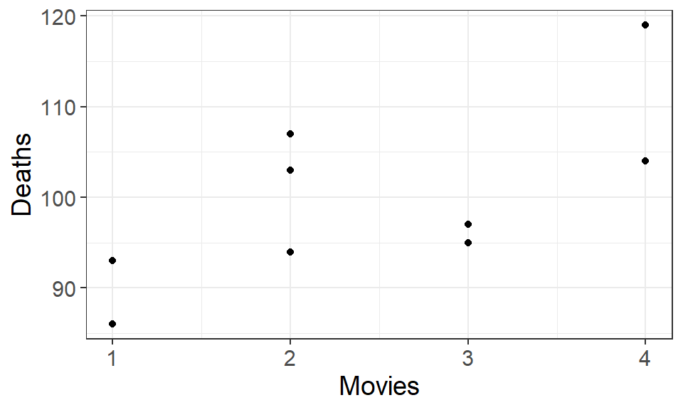

16 Relationships between variables
Investigating relationships between variables is a common step in understanding connections or phenomena occurring in the real world. For example, how the age of a tree affects its volume, how different doses of a medicine affect an individual’s blood pressure, or how a person’s age and education level affect their starting salary.
Regression analysis is a group of methods that fit mathematical models which best provide a simplified picture of reality. Generally, the term model refer to artificial constructions or representations created to increase understanding of something real. A model airplane is not a real airplane but can be used to understand how an airplane is built and how it can handle air flows and other phenomena. Another classic example is the painting “Ceci n’est pas une pipe” by René Magritte (Figure 16.1), which shows a representation — a model — of a pipe, not a functioning pipe.
Note
The term “regression” comes from a paper by the method’s inventor, Sir Francis Galton (half-cousin to Charles Darwin). Galton was studying a specific problem: the relationship between the body heights of humans and their children. He noticed that when plotting the heights of parents along the y-axis and that of their children along the x-axis, the slope of the best-fitting line is always smaller than one. The implication is that very tall parents, on average, tend to have shorter children than themselves, and conversely: children of very short parents are on average taller than their elders. Galton described this phenomenon in a study called “Regression towards mediocrity in hereditary stature” (Galton 1886). In it, he also worked out the method of finding the best line that fits the data, and thus the name regression stuck to the method—even though the process of fitting a line to points has nothing whatsoever to do with anything “regressing”.
Incidentally, the very brief biological explanation of Galton’s finding is as follows. An individual’s height \(H\) can be modeled as \(H = G + E\), where \(G\) denotes heritable (genetic) contributions, and \(E\) denotes other, more or less random, environmental contributions. An exceptionally tall individual likely scores high on both \(G\) and \(E\). Consequently, the individual’s offspring will also likely score high on \(G\), inheriting it from the parents. But, since \(E\) is not inherited, the child’s chances of also scoring really high on \(E\) are exactly those as for anyone else in the population: it could happen, but is unlikely. Typically, the child will have a more or less average value for \(E\). Thus, parents with high \(G\) and high \(E\) will tend to have offspring with high \(G\) and average \(E\), and so very tall parents end up with tall-but-not-quite-as-tall children as themselves. The same argument holds for very short parents, mutatis mutandis. More broadly, the same holds for any heritable and continuously varying trait (body size, length of mandibles, amount of oil in seeds, rooting depth, and so on, for millions of examples), as long as it can be modeled as emerging from the sum of genetic and environmental factors.
16.1 Linear regression models
There are many different types of regression models, but in the simplest case, a linear model is applied when the relationship between variables, for example X and Y, is assumed to be unidirectional and constant. We can write this linear model as: \[ Y_i = \beta_0 + \beta_1 \cdot X_i + \varepsilon_i \tag{16.1}\]
where:
- \(Y\) is the dependent/response variable assumed to be affected by \(X\),
- \(X\) is the independent/explanatory variable assumed to affect \(Y\),
- \(i\) is the i:th observation of the data,
- \(\beta_0\) is the model’s intercept, where the regression line crosses the y-axis at \(X = 0\).
- \(\beta_1\) is the slope that describes the unidirectional relationship between \(X\) and \(Y\). More specifically, it describes the change in \(Y\) when \(X\) increases by one unit.
- \(\varepsilon\) is the model’s error term, the distance between the observed value of \(Y\) and the model’s estimated value \(\hat{Y}\).
Important
If multiple explanatory variables are assumed to affect the response variable, the linear model is extended with several \(\beta_j\), one for each explanatory variable \(X_j\). More on that in Chapter 18.
16.1.1 Model assumptions
The purpose of a model is to provide a suitable simplification of reality but in order to do that it needs to fulfill some criteria or be constructed using some assumptions. A linear regression model can be a suitable simplification of a relationship between two variables if the following assumptions are met:
- for each value of \(X\), there exists a random variable \(Y\) with a finite mean and variance,
- all observations are independent of each other,
- the mean of \(Y\) for every value of \(X\), \(\mu_{Y|X}\), can be modeled linearly,
- the variance of \(Y\) is the same for all values of \(X\), \(\sigma^2_{Y|X} \equiv \sigma^2\),
- the random variable \(Y\) is normally distributed for all values of \(X\).
Together these assumptions can be summarized as:
\[ Y|X \overset{\mathrm{iid}}{\sim} N(\mu_{Y|X}, \sigma^2) \] where \(\mathrm{iid}\) means “independent and identically distributed”, corresponding to assumption 2.
Important
There is no assumption that \(Y \sim N(\mu_Y, \sigma^2_Y)\)! All assumptions for a linear regression model focus on the fact that with the help of \(X\), we have a normally distributed random variable \(Y\).
If the assumption of linearity is met, we can model the expected value of \(Y|X\) with the linear model: \[ E[Y|X] = \beta_0 + \beta_1 \cdot X \tag{16.2}\]
Note
The expected value of a random variable is the mean of its distribution, which is why we can use the notation \(E[Y|X]\) to denote the mean of the distribution of \(Y\) given \(X\).
Unlike Equation 16.1, Equation 16.2 lacks the model’s error term because we are now modeling only the mean of the random variable’s distribution, \(\mu_{Y|X}\). The error term describes the uncertainty around the mean, which is the variance of the distribution.

If a model airplane is constructed without following the same assumptions as a real airplane, the model will not be suitable for the understanding or simplification of reality. The same applies to regression models; if the model does not meet its assumptions, conclusions drawn may not align with reality. We will cover more of how this is done in practice in Section 17.3.
16.2 Study design and additional variables
Apart from the assumptions, a regression model does not necessarily describe a “cause-and-effect” relationship, or as we usually call it, a causal relationship from X to Y. Relationships can sometimes arise purely by chance, where there is no logical connection between the variables.
This type of relationship is referred to as a correlation and although correlation mathematically describes a relationship, it is most often not appropriate or irrelevant to use or interpret that model in reality.

Figure 16.3 shows an example of a relationship where the two variables have no logical connection to each other but have been observed to have a positive correlation, when one’s value increases the other does as well. Describing this relationship would not provide any information about reality, so an important part of regression analysis is assessing the suitability and relevance of selected variables. A regression model cannot distinguish between causal and correlation relationships, which means we must consider what kind and how data has been collected in order to use and interpret the models correctly.
The example in the figure was collected as an observational study, where measurements (the number of deaths and movies) for each unit (year) were observed from various registry data. With an observational study, we are not able to control the relationship between these variables, and the study itself has not considered any specific cause and effect direction between the two. Therefore, we can only draw conclusions about correlations from an observational study — we can say that years that have more movies with Nicolas Cage also have more deaths, which is not actually relevant — but we cannot say anything about the causal effect.
To be able to draw conclusions about causal relationships, we need to conduct an experimental study where we control the values of the explanatory variable and the direction of the relationship; the response variable is assumed to be directly affected by the explanatory variable(s). Medical studies, such as studies on the effectiveness of the COVID-19 vaccine in preventing infection, are typical examples of experimental studies where an explanatory variable (dose) is given to certain groups of measurement units while other influencing effects are controlled to isolate the true impact of the explanatory variable.
16.2.1 Control variables
In an observational study, we can sometimes observe control variables that can adjust the actual impact of the explanatory variable, but it is primarily in experimental studies that these types of variables are used. Unobserved variables are called confounding effects (or confounders) and are assumed to influence both the explanatory and response variable.
In the following two figures called relational graphs, the main explanatory variable and the chosen response variable are shown as ovals. The observed control (solid) and unobserved confounder (dashed) variables are shown as rectangles.
Since the relationship in Figure 16.4 between movies and deaths likely arose by chance, there are most certainly unobserved confounder variables influencing both.
The effect of a medicine on blood pressure can also be influenced by a person’s age and gender (Gu et al. 2008), which are two observed control variables included in Figure 16.5 to isolate the effect of the explanatory variable.